Írás a CRM-be: Self Client + Colab
Saját API-kliens a Zoho-nál, token, és az első programból létrehozott CRM-rekordod, telepítés nélkül, böngészőből.
- regisztráltál egy saját API-klienst a Zoho-nál, és szereztél hozzáférési tokent;
- Google Colabból, egyetlen szkript futtatásával hoztál létre érdeklődőt a CRM-edben;
- a válasz rekordazonosítójával és a CRM-ben megnyitott rekorddal ellenőrizted a sikeres létrehozást.
CRM-rekord létrehozása programból
Az árfolyamnál olvastunk egy API-ból. Most írunk egy API-ba: a saját CRM-edbe hozol létre rekordot programból. Ehhez a Zoho-nál be kell mutatkoznia a programodnak; ezt intézi a Self Client (saját kliens) regisztráció. A lépések elsőre hivatalosnak tűnnek, de kattintásról kattintásra visszük, és az egészet egyszer kell megcsinálni.
1. rész: a kulcsok megszerzése (Self Client)
- Nyisd meg az api-console.zoho.eu oldalt (figyelj: .eu!), és lépj be a Zoho-fiókoddal. Mivel ez érzékeny művelet, a Zoho újra elkérheti a jelszavad (Verify your identity): ez normális, add meg, és mehetsz tovább. A nyitóoldalon kattints a GET STARTED gombra.
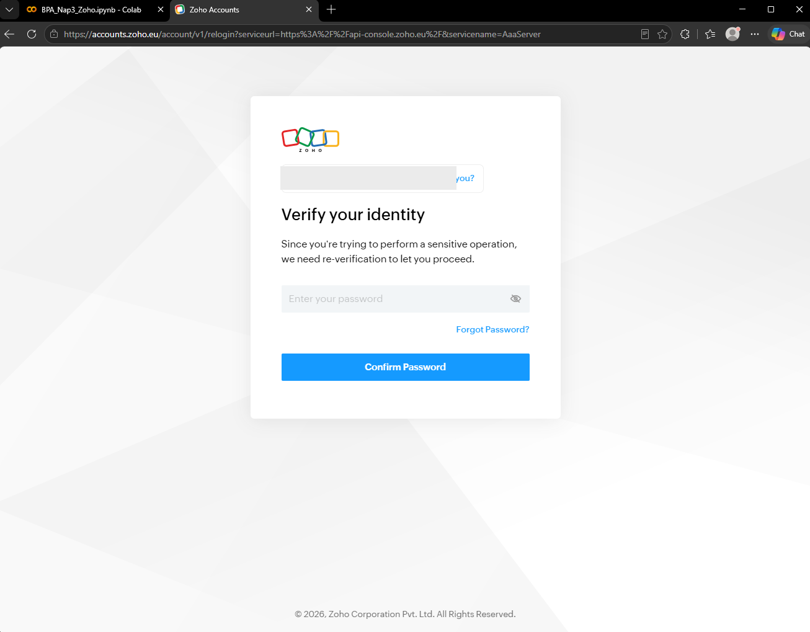
A Zoho biztonsági újra-hitelesítése: Verify your identity képernyő 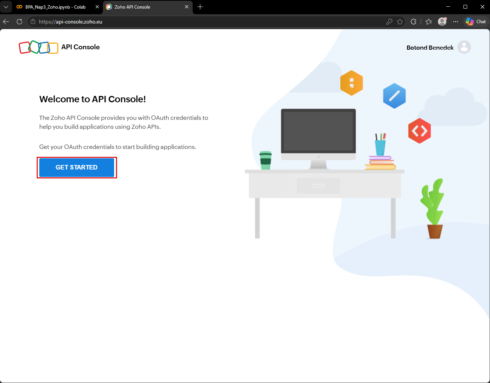
Az API Console nyitóoldala; a piros keretben a GET STARTED gomb - A kliens-típusok közül válaszd a Self Client kártyát (CREATE NOW), majd a megerősítő képernyőn kattints a CREATE gombra.
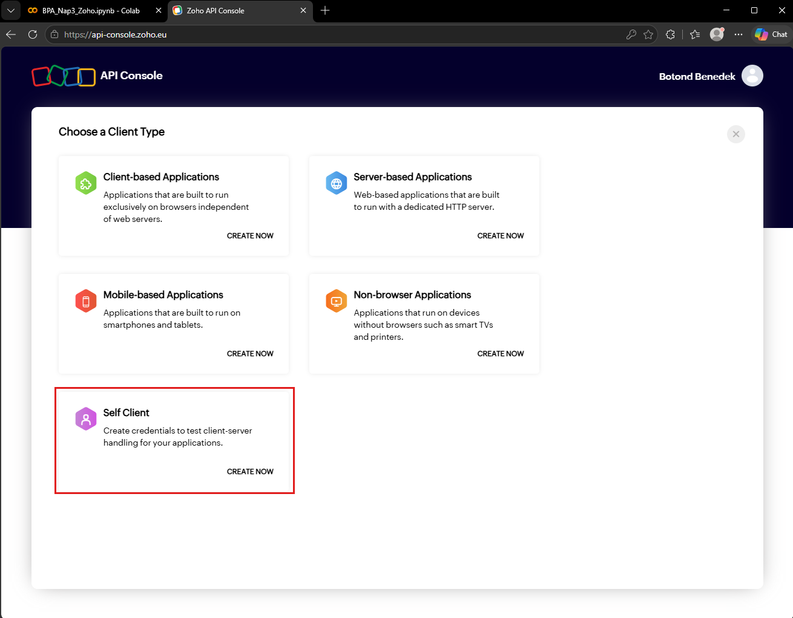
A Choose a Client Type képernyő; a piros keretben a Self Client kártya 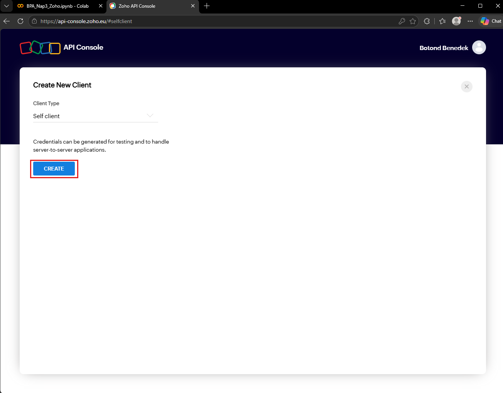
A Create New Client megerősítése; a keretben a CREATE gomb - A Client Secret fülön látod a Client ID és Client Secret értékét. Hagyd nyitva ezt az oldalt: a Colab bemeneti mezőibe fogod őket bemásolni. A titkos értékeket nem tesszük bele a tananyagba vagy a megosztott jegyzetfüzet kódjába.
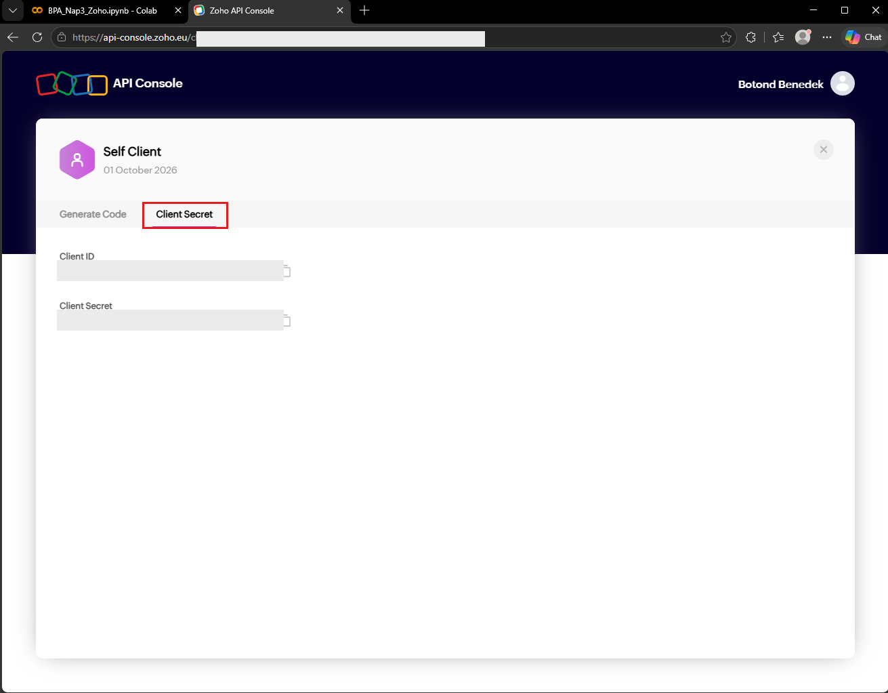
A Client Secret fül; a Client ID és a Client Secret értéke a képen kitakarva - A Generate Code fül Scope mezőjébe írd:
ZohoCRM.modules.ALL. A gyakorló saját CRM-ben ez a modulműveletekhez ad hozzáférést; éles alkalmazásnál a szükséges műveletekre szűkebb scope-ot választanánk. Az érvényességet állítsd 10 percre, ha ez az opció elérhető; egyébként a felületen jelzett időn belül használd fel. A Deszkription legyen BPA kurzus, majd CREATE.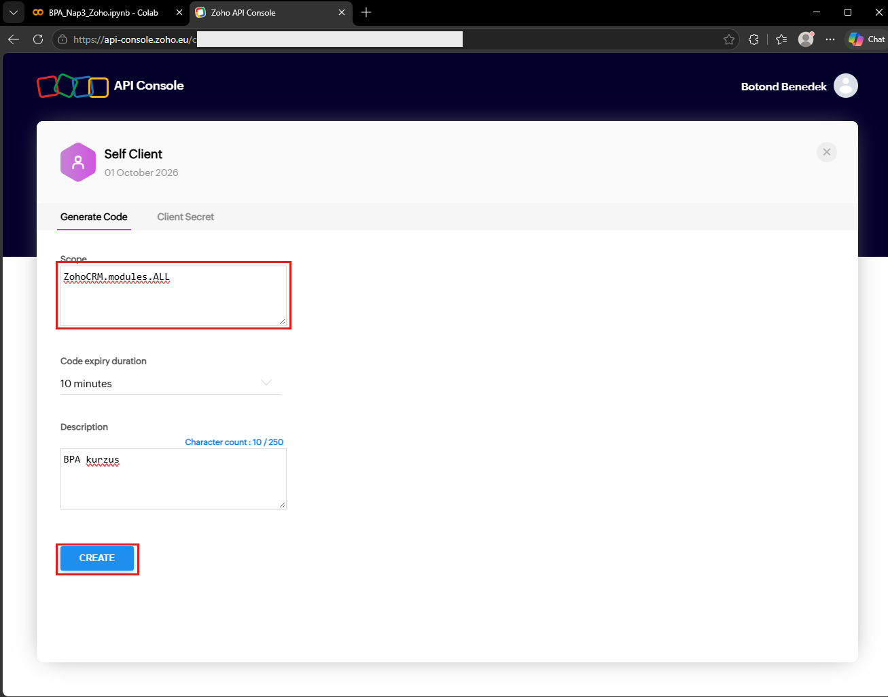
A Generate Code fül kitöltve; a keretben a Scope mező és a CREATE gomb - A rendszer megkérdezi, melyik szervezethez szóljon a hozzáférés (Select Portal): válaszd ki a CRM alatt a saját szervezetedet, és CREATE.
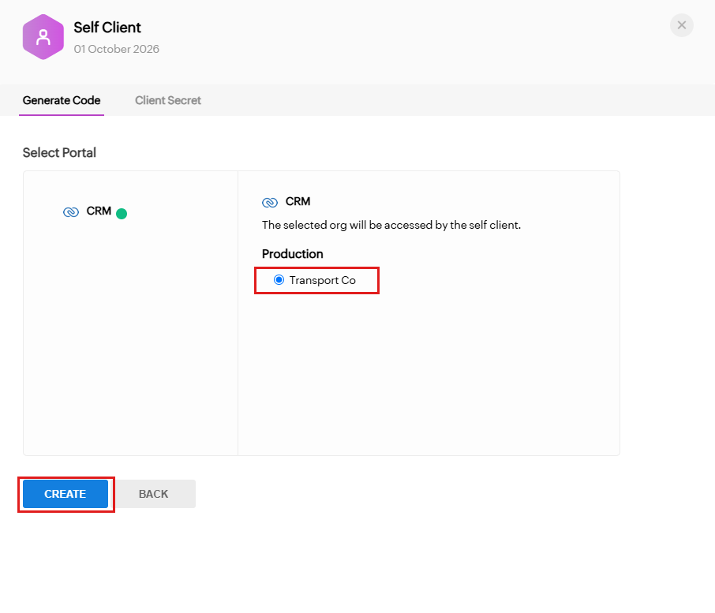
A Select Portal lépés; a keretben a szervezet és a CREATE gomb - A felugróban megjelenik a generált kód: a COPY gombbal azonnal másold vágólapra (és akár egy jegyzetbe is).
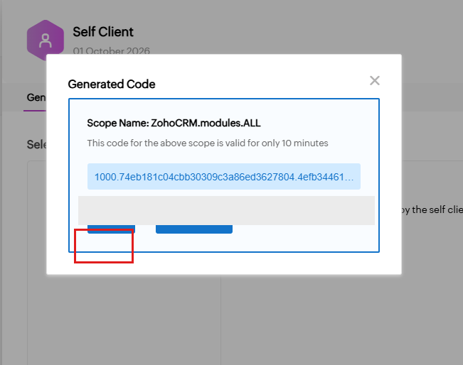
A Generated Code felugró; a kód a képen kitakarva, a keretben a COPY gomb
A kódot a kiválasztott időtartamon belül egyszer válthatod tokenre. A már felhasznált kódot nem lehet újra beváltani. Az access token rendszerint egy órán át érvényes; a refresh tokennel új access token kérhető. Az adatközpontnak a kliens, a kód, a token és a CRM-hívás között egyeznie kell.
A javított példák a /crm/v8/Leads végpontot használják. A régebbi képeken előfordulhat más verzió; a mellékelt kódot kövesd. Hivatalos útmutató: Self Client, rekordlétrehozás.
2. rész: futtatás Google Colabban
A Colab a böngészőben futó Python-környezet; helyi telepítés nem szükséges. Először a tokenkérő cellát futtatod, majd ugyanabban a jegyzetfüzetben a rekordlétrehozást. A mellékelt szkriptek bemeneti mezőben kérik a belépési adatokat és ellenőrzik a választ.
- Nyisd meg a colab.new címet (Google-fiókkal). Egy üres jegyzetfüzetet kapsz, benne egy kódcellával.
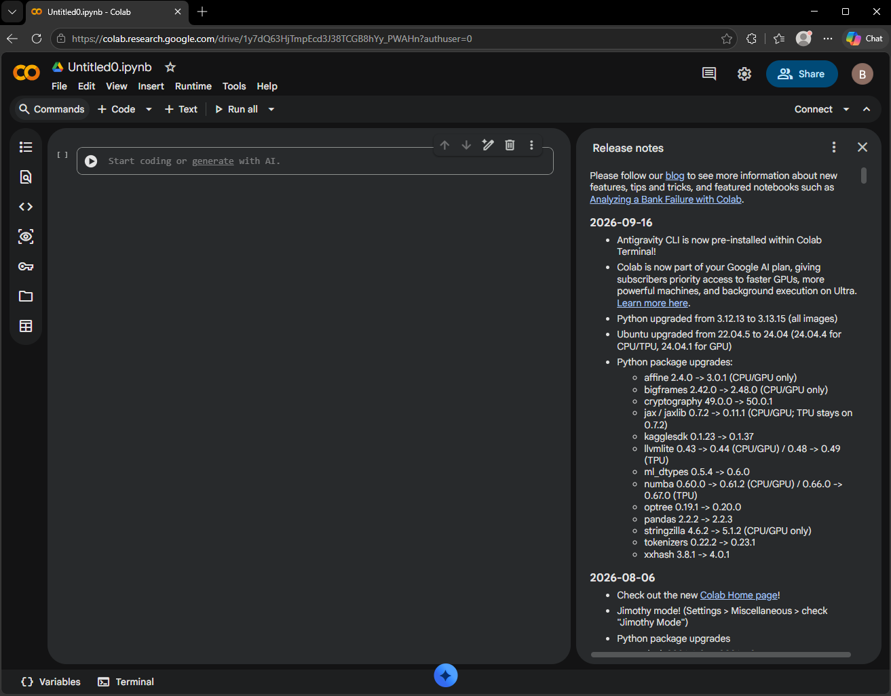
Üres Colab-jegyzetfüzet egy kódcellával - Kattints felül az Untitled névre, és nevezd át: BPA_Nap3_Zoho.ipynb. Próbának írd az első cellába:
print("Szia, BPA!"), és futtasd a cella bal szélén lévő lejátszás-gombbal (vagy Ctrl+Enter). Az első futásnál a Colab pár másodpercig kapcsolódik: ez normális.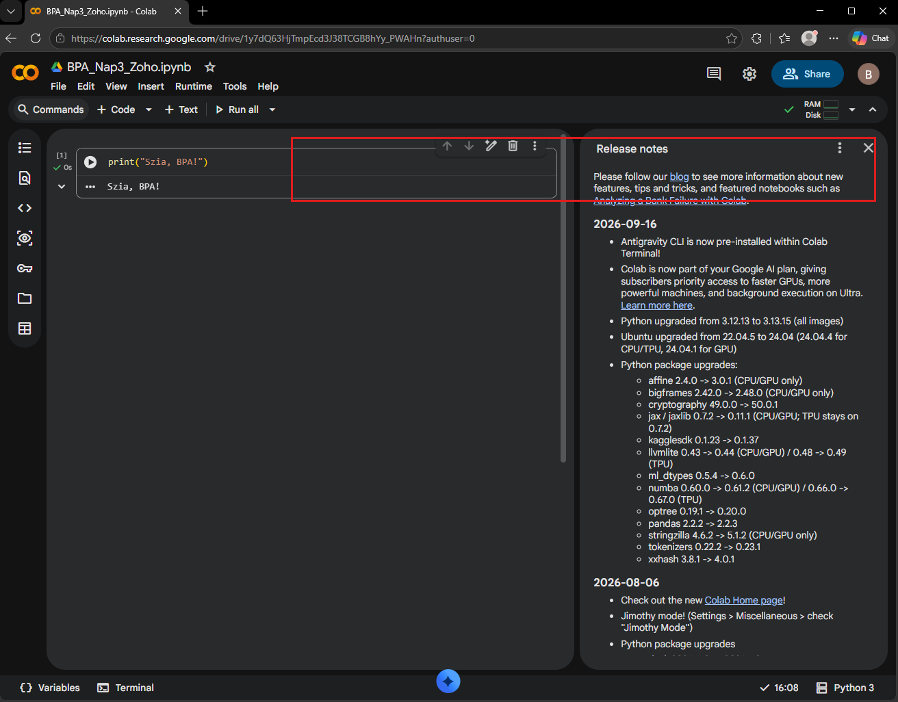
Az átnevezett jegyzetfüzet és az első lefuttatott cella a kimenettel (keretben) - Érdemes megjegyezni: a bal oldali mappa ikon (Files) nyitja a jegyzetfüzet fájlpaneljét: ide lehet fájlt feltölteni. Ma nem kell, de a hatodik napi beadandónál innen töltöd majd fel a CSV-det.
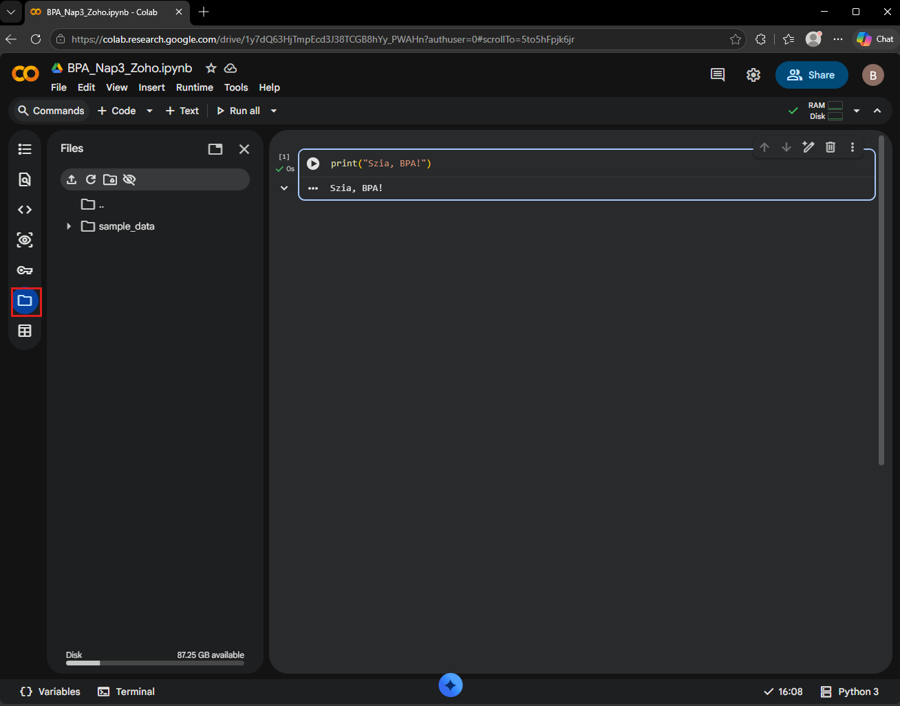
A Files panel megnyitva; a keretben a mappa ikon - Nyisd meg a zoho_token_colab.py fájlt, és másold új Colab-kódcellába (+ Code). Futtasd, majd a megjelenő mezőkbe másold a Client ID-t, a Client Secretet és a friss generált kódot. A titkos mezők bevitelét a getpass rejti el; a gépelés után nyomj Entert.
- Siker esetén a kimenet jelzi, hogy a token elkészült. A program az
ACCESS_TOKENváltozóban tárolja, nem írja ki. A korábbi képernyőképen még tokenkiírás szerepel; a javított szkript ugyanabban a Colab-futásban közvetlenül továbbadja a változót a következő cellának.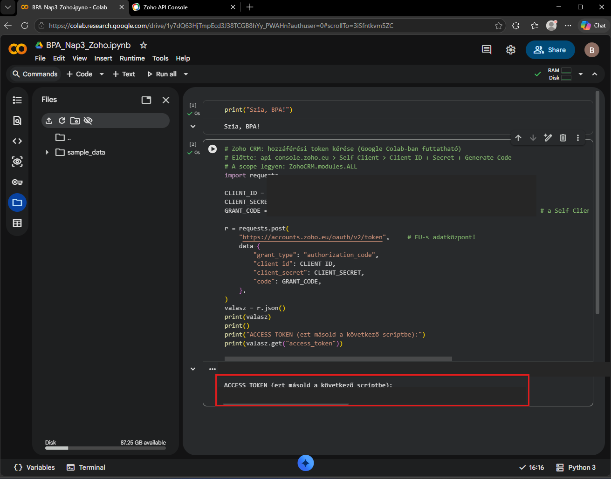
A token-kérő cella lefuttatva; a keretben az ACCESS TOKEN sora (értéke kitakarva) - Új kódcellába másold a zoho_lead_colab.py tartalmát, és futtasd. A cella használja a már létrehozott ACCESS_TOKEN változót. Ha külön környezetben futtatod, bemeneti mezőben kér tokent; a legegyszerűbb ugyanabban a jegyzetfüzetben maradni.
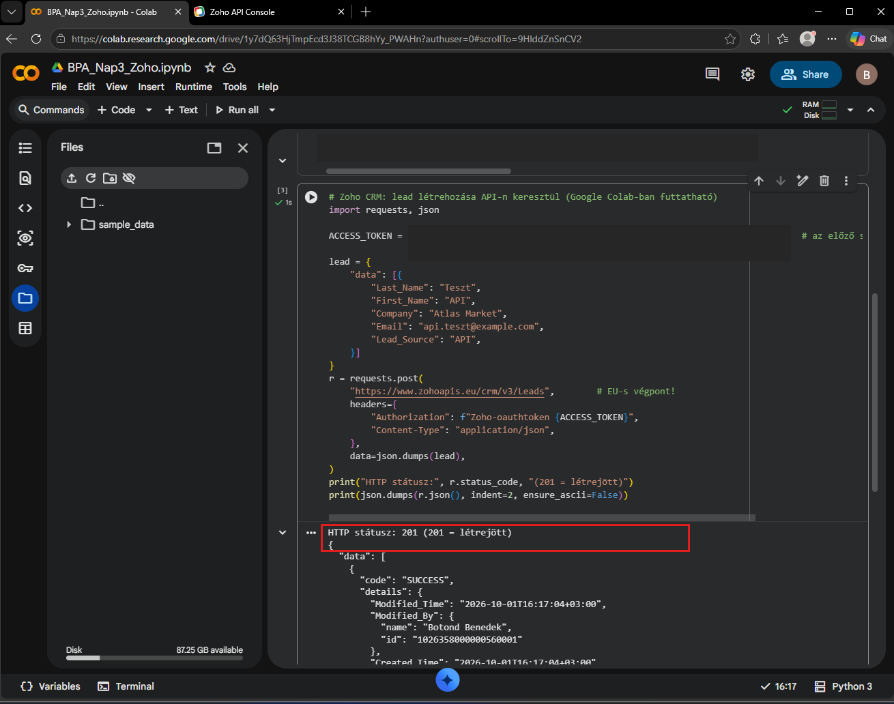
A lead-létrehozó cella lefuttatva; a keretben a kimenet: HTTP státusz 201
A sikeres válaszban a rekord status értéke success, a code értéke SUCCESS, és a details.id tartalmazza az azonosítót. A HTTP-státusz rendszerint 201. A szkript csak a rekordválasz ellenőrzése után jelez sikert. A CRM Leads listájában keresd az API Teszt / Atlas Market rekordot.
Lejárt tokennél ugyanabban a Colabban futtasd a zoho_refresh_colab.py cellát, majd a lead-cellát. A Colab-futás újraindítása törli a változókat; ilyenkor új kódot kérj, és futtasd újra a token-cellát. A generált kód ismételt beváltása nem tokenfrissítés.
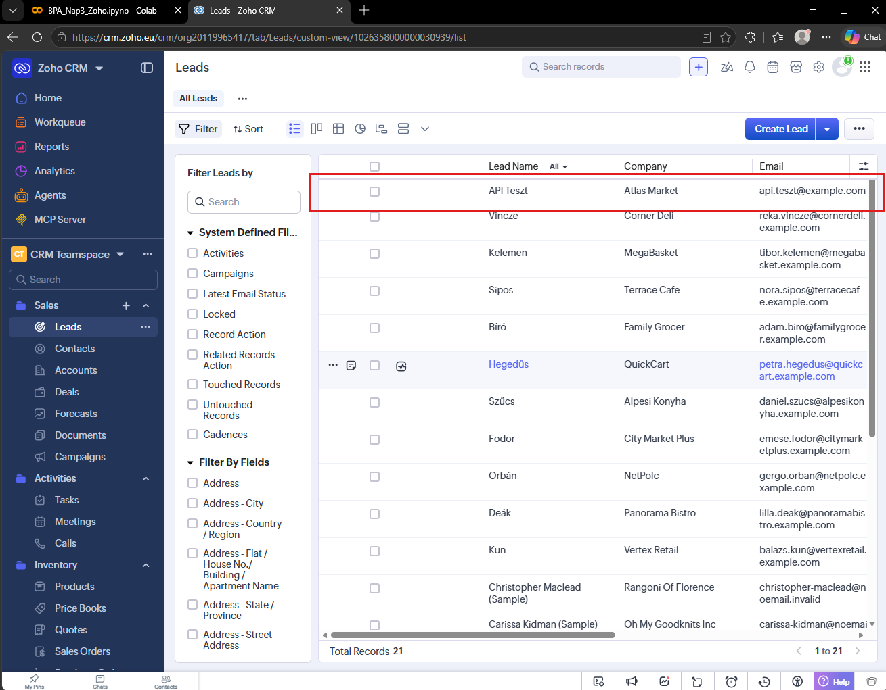
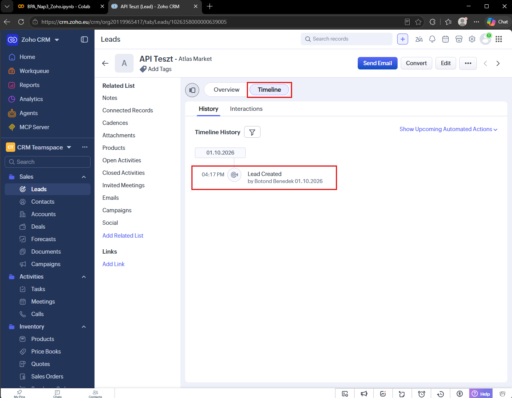
Ha hiba van: INVALID_TOKEN/401 esetén frissítsd a tokent. OAUTH_SCOPE_MISMATCH esetén ellenőrizd a scope-ot. MANDATORY_NOT_FOUND esetén a válaszban jelzett kötelező mezőt add meg; a fiók egyedi mezőket is megkövetelhet. DUPLICATE_DATA esetén lehet, hogy az azonos e-mailes rekord már létezik. Hálózati hiba után újrafuttatás előtt ellenőrizd a CRM-et, mert a rekord a válasz elvesztése ellenére létrejöhetett.
A lead-szkript mezőit változtasd meg egy új, fiktív érdeklődőre. A Last_Name, First_Name, Company és Email legyen megkülönböztethető az első teszttől. A Deszkription mezőbe írd az üzleti példához tartozó megjegyzést. Futtasd, majd a válaszban kapott azonosítóval ellenőrizd a rekordot.
- Ugyanezzel a mintával (token + POST) írható a legtöbb üzleti rendszer: számlázó, hírlevélküldő, projektkezelő.
- A hatodik napi beadandóban 40 ügyfelet töltesz majd be így, egyenként kattintgatás helyett.
- A nyolcadik napon a robot fogja ugyanezt hívni: ott áll össze robot + API egy folyamattá.